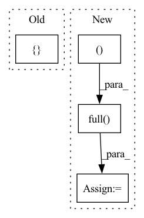

Pattern ID :40348
Before Change
return [np.sum([v for _, v in pp.items()]) for pp in pot]
def _make_indeces(self, natoms, excludepairs):
allvsall_indeces = []
for i in range(natoms):
for j in range(i + 1, natoms):
if [i, j] in excludepairs or [j, i] in excludepairs:
continueAfter Change
return [np.sum([v for _, v in pp.items()]) for pp in pot]
def _make_indeces(self, natoms, excludepairs):
fullmat = np.full( (natoms, natoms ), True, dtype=bool)
if len(excludepairs):
excludepairs = np.array(excludepairs)
fullmat[excludepairs[:, 0], excludepairs[:, 1]] = False
fullmat[excludepairs[:, 1], excludepairs[:, 0]] = False
fullmat = np.triu(fullmat, +1)
allvsall_indeces = np.vstack(np.where(fullmat)).T
ava_idx = torch.tensor(allvsall_indeces).to(self.device)
return ava_idx
In pattern: SUPERPATTERN
Frequency: 5
Non-data size: 4
Instances Fragment ID: 114520625
Project Name: torchmd/torchmd
Commit Name: 3b9546b4305fd06e35b22e29940fe3d7f67bce86
Time: 2020-05-21
Author: stefdoerr@gmail.com
File Name: torchmd/forces.py
M Class Name: Forces
N Class Name: Forces
M Method Name: _make_indeces(3)
N Method Name: _make_indeces(3)
M Parent Class:
N Parent Class:
M File Name: torchmd/forces.py
N File Name: torchmd/forces.py
M Start Line: 175
M End Line: 182
N Start Line: 242
N End Line: 248
Before Change
// TODO: calculate grad and check correctness
check_backward = False
for reduction in [ "max", "mean"After Change
]
elif reduction == "min":
initial_value = 1000 // some high number
expected_result = [
np.full( (2, 5 ), initial_value) .tolist(),
np.min(data, axis=0).tolist(),
]
elif reduction == "sum": Fragment ID: 114520611
Project Name: pytorch/pytorch
Commit Name: af66824c1f66eadd7dd347de0c323ef4d8dfe07d
Time: 2021-06-23
Author: serhaty@fb.com
File Name: test/test_segment_reductions.py
M Class Name: TestSegmentReductions
N Class Name: TestSegmentReductions
M Method Name: test_multi_d(3)
N Method Name: test_multi_d(3)
M Parent Class: TestCase
N Parent Class: TestCase
M File Name: test/test_segment_reductions.py
N File Name: test/test_segment_reductions.py
M Start Line: 175
M End Line: 210
N Start Line: 220
N End Line: 267
Before Change
X_ = self.linear1(X_)
X_ = F.relu(X_)
y = self.linear2(X_)
return { "paper": y[5912:8937]}
class GTLayer(nn.Module):
After Change
edge_weight = g.edata["w_sum"]
g = dgl.add_self_loop(g)
//g.edata["w_sum"] = th.cat((edge_weight, th.full((g.number_of_nodes(),), 2, device=g.device)))
edge_weight = th.cat((edge_weight, th.full( (g.number_of_nodes(), device=g.device) ))
// edge_weight = self.norm(g, g.edata["w_sum"])
if i == 0:
X_ = self.gcn(g, h, edge_weight=edge_weight) Fragment ID: 114520624
Project Name: bupt-gamma/openhgnn
Commit Name: 7dc18922c26e0e8a2d57caebded7a4ec5c22b221
Time: 2021-05-26
Author: theheavenszhao@outlook.com
File Name: openhgnn/models/GTN_sparse.py
M Class Name: GTN
N Class Name: GTN
M Method Name: forward(3)
N Method Name: forward(3)
M Parent Class: BaseModel
N Parent Class: BaseModel
M File Name: openhgnn/models/GTN_sparse.py
N File Name: openhgnn/models/GTN_sparse.py
M Start Line: 64
M End Line: 86
N Start Line: 71
N End Line: 102
Before Change
)
image_tokens = torch.multinomial(probs, 1)[:, 0]
image_tokens_sequence += [ image_tokensAfter Change
self.embed_count
)
attention_state = torch.zeros(attention_state_shape)
image_tokens_sequence = torch.full(
(image_count, self.image_token_count ),
6965, // black token
dtype=torch.long
)
if torch.cuda.is_available():
attention_state = attention_state.cuda()
image_tokens_sequence = image_tokens_sequence.cuda()
image_tokens = self.start_token[[0] * image_count]
Fragment ID: 114520631
Project Name: kuprel/min-dalle
Commit Name: 6f617fe98f268c148d520ff8f32466091c786951
Time: 2022-07-04
Author: brkuprel@gmail.com
File Name: min_dalle/models/dalle_bart_decoder.py
M Class Name: DalleBartDecoder
N Class Name: DalleBartDecoder
M Method Name: forward(4)
N Method Name: forward(4)
M Parent Class: nn.Module
N Parent Class: nn.Module
M File Name: min_dalle/models/dalle_bart_decoder.py
N File Name: min_dalle/models/dalle_bart_decoder.py
M Start Line: 209
M End Line: 222
N Start Line: 208
N End Line: 231
Before Change
return padding_masks & nopeak_masks // (B, T_L, T_L)
def nucleus_sampling(self, e_outputs, e_masks):
trg_input = [ self.bos_id, self.sp2_idAfter Change
return padding_masks & nopeak_masks // (B, T_L, T_L)
def nucleus_sampling(self, e_outputs, e_masks):
trg_input = torch.full( (self.args.trg_max_len, dtype=torch.long, device=e_outputs.device) // (T_L)
trg_input[0] = self.args.bos_id
trg_input[1] = self.args.sp2_id
trg_input = trg_input.unsqueeze(0) // (1, T_L)
trg_pos = torch.arange(self.args.trg_max_len, device=trg_input.device).unsqueeze(0) // (1, T_L)
output_ids = [] Fragment ID: 114520601
Project Name: devjwsong/recosa-dialogue-generation-pytorch
Commit Name: 63e2cd90ddb124ac7820f917a35ddac3b7b21156
Time: 2021-10-21
Author: devjwsong@gmail.com
File Name: src/train_module.py
M Class Name: TrainModule
N Class Name: TrainModule
M Method Name: nucleus_sampling(3)
N Method Name: nucleus_sampling(3)
M Parent Class: pl.LightningModule
N Parent Class: pl.LightningModule
M File Name: src/train_module.py
N File Name: src/train_module.py
M Start Line: 173
M End Line: 199
N Start Line: 185
N End Line: 214